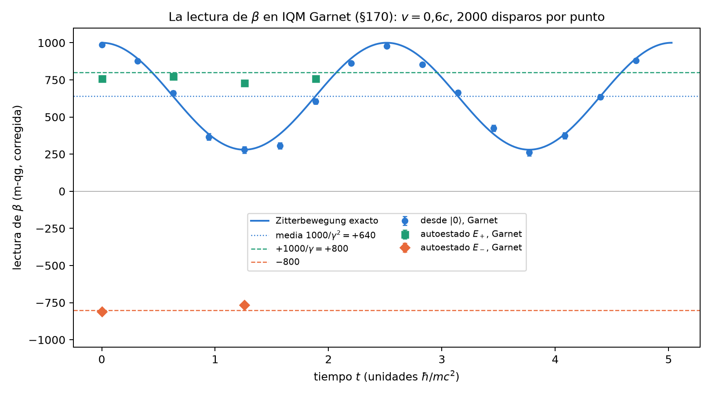

Apéndice G — La energía relativista y la antimateria como lecturas qang
El capítulo 1 dejó como propuesta sin verificar la extensión de la escala qang a \(E=mc^2\) y a la antimateria (Sección 1.4.1). Este apéndice la desarrolla con las ecuaciones de probabilidad del capítulo 1 y separa con cuidado lo que es exacto de lo que sigue siendo una lectura propuesta. El resultado central es exacto, aunque conocido: para una partícula libre de Dirac, el valor esperado de la matriz \(\beta\) es \(mc^2/E\). Como \(\beta\) tiene autovalores \(\pm1\), igual que \(\sigma_z\), ese valor esperado es un \(qg_Z\), y todo el capítulo 1 se le aplica: tiene probabilidad, ángulo qang, lectura en m-qg y barra de error. Todas las cifras salen de tools/verify_apendice_g.py (25 afirmaciones, todas pasan), y nada de lo que sigue es física nueva.
G.1 El ángulo relativista
Al dividir \(E^2=(mc^2)^2+(pc)^2\) por \(E^2\) se obtiene una identidad pitagórica, que define un ángulo \(\theta_r\):
\[ \cos\theta_r=\frac{mc^2}{E}=\frac1\gamma,\qquad \sin\theta_r=\frac{pc}{E}=\beta,\qquad \tan\theta_r=\beta\gamma=\frac{p}{mc}, \qquad E=\frac{mc^2}{\cos\theta_r}. \]
En reposo, \(\theta_r=0\) y la fórmula da \(E=mc^2\). Cuando \(\beta\to1\), \(\theta_r\to90^\circ=250\) qga y \(E=pc\): es el límite de la luz, sin masa en reposo. En la escala angular del capítulo 1 (Sección 1.4), \(E=mc^2/\cos(2\pi\,\theta_{r,qga}/1000)\). Tabla G.1 da algunos valores.
| \(\beta\) | \(\gamma\) | \(\theta_r\) | \(\theta_r\) (qga) | \(1000/\gamma\) (m-qg) | \(T/mc^2=\gamma-1\) |
|---|---|---|---|---|---|
| 0 | 1 | \(0^\circ\) | 0 | \(+1000\) | 0 |
| 0,5 | 1,155 | \(30^\circ\) | 83,3 | \(+866{,}0\) | 0,155 |
| 0,6 | 1,25 | \(36{,}87^\circ\) | 102,4 | \(+800{,}0\) | 0,25 |
| 0,8 | 1,667 | \(53{,}13^\circ\) | 147,6 | \(+600{,}0\) | 0,667 |
| 0,99 | 7,089 | \(81{,}89^\circ\) | 227,5 | \(+141{,}1\) | 6,089 |
| 0,999 | 22,37 | \(87{,}44^\circ\) | 242,9 | \(+44{,}7\) | 21,37 |
El ángulo \(\theta_r\) no es la rapidez \(\eta\) (\(\beta=\tanh\eta\)): se relacionan por \(\cos\theta_r=1/\cosh\eta\), la función de Gudermann. Las rapideces se suman en impulsos colineales; los ángulos no. Dos impulsos de \(0{,}6c\) dan \(\beta=0{,}8824\) y \(\gamma=2{,}125\), es decir, \(\theta_r=61{,}93^\circ=172{,}0\) qga, no la suma \(2\times102{,}4=204{,}8\) qga. La escala qga mide el ángulo, pero no lo vuelve aditivo.
G.2 \(E=mc^2\) como una lectura: el valor esperado de \(\beta\)
En la ecuación de Dirac libre, \(H=c\,\vec\alpha\cdot\vec p+\beta\,mc^2\). Por el teorema de Hellmann–Feynman (Feynman 1939), derivar un autovalor respecto de un parámetro da el valor esperado de la derivada del hamiltoniano: \(\partial E/\partial(mc^2)=\langle\beta\rangle\). Como \(E=\pm\sqrt{(pc)^2+(mc^2)^2}\),
\[ \boxed{\;\langle\beta\rangle=\frac{mc^2}{E}=\cos\theta_r\;} \]
en cada autoestado libre, con el signo de \(E\). El script lo comprueba en 1200 autoestados al azar, de las dos ramas, con un error de \(2\cdot10^{-15}\). La matriz \(\beta\) tiene autovalores \(\pm1\), así que \(\langle\beta\rangle\) es un \(qg_Z\). En la codificación habitual del bispinor en dos qubits es literalmente la \(Z\) del primero, \(\beta=\sigma_z\otimes I\), y Qiskit lo confirma: el \(qg_Z\) de ese qubit es \(mc^2/E\). Se llamará a ese qubit el qubit de \(\beta\). La ecuación de probabilidad del capítulo 1 le asigna sus cuatro lecturas:
\[ p_0=\frac{E+mc^2}{2E}=\cos^2\frac{\theta_r}{2},\qquad p_1=\frac{E-mc^2}{2E}=\frac{T}{2E},\qquad m=1000\,\frac{mc^2}{E}=\frac{1000}{\gamma}\ \text{m-qg},\qquad \theta=\theta_r . \]
Leída al revés, es una forma de escribir la energía: \(E=mc^2/qg_Z=1000\,mc^2/m\), y la energía cinética es \(T=2E\,p_1\). \(E=mc^2\) es el polo: en reposo, \(m=+1000\) m-qg, \(p_1=0\), sin energía cinética. La luz está en el ecuador. Una partícula a \(0{,}6c\) lee \(+800\) m-qg, con \(p_0=0{,}9\); a \(0{,}99c\), \(+141{,}1\) m-qg.
Dos precisiones. Primero, la lectura no depende de la representación: \(\langle\beta\rangle=\bar\psi\psi/\psi^\dagger\psi\) es un escalar de Lorentz dividido por una densidad, y en la representación quiral, donde \(\beta\) no es diagonal, da lo mismo (comprobado). Lo que sí depende de la representación es la imagen de \(p_0\) y \(p_1\) como pesos de las componentes “grande” y “pequeña” del espinor, que sólo vale en la representación estándar de Dirac. Segundo, el qubit de \(\beta\) es una lectura de una simulación de la ecuación de Dirac, como las de iones atrapados (Gerritsma et al. 2010): en un laboratorio de partículas nadie mide \(\beta\) disparo a disparo.
G.3 La antimateria: la rama negativa y la conjugación de carga
En la rama de energía negativa, la misma identidad da \(\langle\beta\rangle=-mc^2/\lvert E\rvert\): la lectura es \(m=-1000/\gamma\), el espejo de la de la rama positiva a través del ecuador. Dirac (1928) encontró esas soluciones, y la reinterpretación de Feynman (Feynman 1949) las lee como antipartículas de energía positiva que viajan hacia el futuro. En qang, la rama de la solución se ve en el signo de la lectura del qubit de \(\beta\): hemisferio norte, la rama positiva; hemisferio sur, la negativa.
La simetría que pasa de una rama a la otra es la conjugación de carga \(C\), \(\psi\mapsto i\gamma^2\psi^*\). El script comprueba que \(C\) lleva un autoestado de energía \(+E\) de \(H(\vec p)\) a uno de energía \(-E\) de \(H(-\vec p)\), que invierte la lectura, \(m\mapsto-m\), y que la paridad \(P\) y la inversión temporal \(T\) la conservan. Por lo tanto \(CPT\) también la invierte. En el ángulo del qubit de \(\beta\), \(C\) es la reflexión \(\theta_{qga}\mapsto500-\theta_{qga}\); para la lectura da lo mismo que media vuelta, \(\theta_{qga}\mapsto\theta_{qga}+500\).
Esto rescata, corregido, lo que el documento fuente afirmaba: que la simetría \(CPT\) «induce una traslación angular de 500 qg». Hay un núcleo correcto: la conjugación de carga, y con ella \(CPT\), actúa sobre la lectura de \(\beta\) como media vuelta en qga. Pero no es una traslación del estado: es una reflexión de su lectura. Y es cierto, como dice el documento, que la densidad de probabilidad no cambia: \(i\gamma^2\) es unitaria, así que \(\psi^{c\dagger}\psi^c=\psi^\dagger\psi\) punto a punto (comprobado).
G.4 Las probabilidades del documento fuente
El documento fuente usa otro par de probabilidades, \(P_\text{reposo}=(mc^2/E)^2\) y \(P_\text{cinético}=\beta^2\). También suman 1, por la identidad pitagórica, y también son un qubit, pero con el doble de ángulo: \(R_y(2\theta_r)|0\rangle\) da \(p_0=1/\gamma^2\) y \(p_1=\beta^2\) (QuTiP). Se lo llamará qubit de Pitágoras. Ese factor 2 es el que el capítulo 1 señaló como error. No es que una de las dos fórmulas esté mal; son dos qubits distintos para la misma partícula:
| ángulo | \(p_0\) | \(p_1\) | a \(0{,}6c\) | |
|---|---|---|---|---|
| qubit de \(\beta\) (valor esperado de \(\beta\)) | \(\theta_r\) | \((E+mc^2)/2E\) | \(T/2E\) | \(p_0=0{,}9\); 102,4 qga |
| qubit de Pitágoras (partición de \(E^2\)) | \(2\theta_r\) | \((mc^2/E)^2\) | \(\beta^2\) | \(p_0=0{,}64\); 204,8 qga |
Sólo el primero es el valor esperado de un observable de la ecuación de Dirac. El segundo es una partición de \(E^2\) en dos cuadrados: una probabilidad bien definida, pero sin un observable detrás.
G.5 Medir el ángulo relativista con disparos
Si el ángulo \(\theta_r\) se codifica en un qubit, con \(R_y(\theta_r)\) y \(qg_Z=1/\gamma\), el capítulo 1 dice cuánto cuesta leerlo. Como el ángulo qang es la transformación arcoseno, \(\sigma(\theta_r)=1/\sqrt N\) para cualquier velocidad, es decir, \(159{,}15/\sqrt N\) qga. La velocidad, \(\beta=\sin\theta_r\), tiene entonces \(\sigma(\beta)=1/(\gamma\sqrt N)\): se resuelve mejor cuanto más rápida es la partícula. Con 1000 disparos, el ángulo tiene 5,03 qga de incertidumbre en todo el rango, y a \(0{,}99c\) la velocidad se resuelve a \(0{,}0045\). El script lo comprueba muestreando con Qiskit a \(0{,}3c\), \(0{,}6c\) y \(0{,}9c\).
G.6 La lectura de \(\beta\) en un chip real (§170)
En una dimensión y con impulso fijo, el hamiltoniano de Dirac es un solo qubit, \(H=p\,X+m\,Z\), con \(\beta=Z\). Así el qubit de \(\beta\) se puede preparar y leer en un qubit físico. Con \(m=1\) y \(p=0{,}75\) es \(E=1{,}25\), \(v=0{,}6c\), \(\gamma=1{,}25\) y \(\theta_r=102{,}4\) qga. Lo exacto es esto: el autoestado de energía positiva, \(R_y(\theta_r)|0\rangle\), lee \(+800\) m-qg en todo momento, y el de energía negativa lee \(-800\). En cambio \(|0\rangle\) mezcla las dos ramas, y su lectura oscila a la frecuencia \(2E\) entre \(+1000\) y \(+280\) m-qg alrededor de \(1000/\gamma^2=+640\): es el Zitterbewegung, el temblor de Dirac. Ese promedio, \(1000\,(mc^2/E)^2\), es el \(P_\text{reposo}\) del documento fuente (Sección G.4): la probabilidad del documento es el promedio temporal de la lectura de \(\beta\).
Se corrió en IQM Garnet, en el qubit 0: 24 circuitos de 2000 disparos en un trabajo de 32 s, con la lectura corregida desde los polos (\(e_0=0{,}0030\), \(e_1=0{,}0265\)). Las cinco predicciones quedaron fijadas antes de la corrida (sha256 del archivo subido al repositorio antes del trabajo; Capítulo 28). Llevan un margen sistemático de 60 m-qg, tomado de §168, donde \(R_y\) en ángulos intermedios leyó bajo.
| predicción | medido (m-qg, corregido) | previsto | veredicto |
|---|---|---|---|
| Z1: \(E_+\) en \(t=0\) | \(+759{,}9\pm14{,}9\) | \(+800\) | cumple (\(z=-2{,}7\); también sin el margen) |
| Z2: \(E_-\) en \(t=0\); reflexión \(C\) | \(-809{,}4\pm14{,}9\); \(-49{,}5\) | \(-800\); 0 | cumple (dentro de \(3\sigma\) sin el margen) |
| Z3: \(E_+\) no tiembla (rango en un período) | 45,3 | \(\le108\) | cumple |
| Z4: frecuencia ajustada | 2,511 | \(2E=2{,}5\) (\(\pm5\) %) | cumple (0,44 % de diferencia) |
| Z5: media; amplitud | 625,6; 356,1 | 640; 360 (\(\pm60\)) | cumple (14 y 4 m-qg de diferencia) |
Las cinco predicciones se cumplen. En un chip real, el autoestado de Dirac lee \(1000/\gamma\), la rama negativa lo refleja, y el Zitterbewegung aparece a la frecuencia \(2E\), con la media \(1000/\gamma^2\) y la amplitud previstas (Figura G.1). Z1 y Z5 discriminaban de verdad. El qubit de Pitágoras habría leído \(+640\) en Z1. Una media de \(1000/\gamma\) habría dado \(+800\) en Z5. Las dos quedan fuera de la tolerancia.
No salió limpio, y se dice. Las cuatro lecturas de \(E_+\) quedan entre 26 y 71 m-qg por debajo de \(+800\); la peor, en \(t=T/2\), tiene \(z=-4{,}5\) y no forma parte de ninguna predicción. Es la misma dirección que en §168. Los 16 puntos del Zitterbewegung se apartan 30 m-qg (rms) de la curva exacta, más que el ruido de disparo (\(\chi^2\) por grado de libertad 2,4), así que los errores de compuerta se ven, aunque no mueven ni la frecuencia ni la media. Como velocímetro, \(E_+\) en \(t=0\) da \(\gamma=1{,}316\) (la verdadera es 1,25: +5 %) y \(E_-\) da 1,236 (−1 %). Es una sola corrida en un solo qubit. Falta repetirla en otro qubit y otro día, igual que §168.

G.7 Qué se afirma y qué no
- Exacto y comprobado: el ángulo relativista y sus identidades; \(\langle\beta\rangle=mc^2/E\) con el signo de la rama (Hellmann–Feynman), independiente de la representación; sus cuatro lecturas qang (\(p_1=T/2E\), \(m=1000/\gamma\)); \(C\) y \(CPT\) invierten la lectura, y \(P\) y \(T\) la conservan; el qubit de Pitágoras; la barra de error del ángulo.
- Comprobado en hardware (una corrida, §170): en IQM Garnet, la lectura \(1000/\gamma\) de un autoestado, su reflejo en la rama negativa y el Zitterbewegung a \(2E\) con media \(1000/\gamma^2\). Las cinco predicciones se cumplen, con un sesgo de compuerta de 26 a 71 m-qg que queda a la vista.
- Conocido, no nuevo: todo lo anterior es mecánica cuántica relativista de libro (Thaller 1992) escrita en la escala del capítulo 1. Lo que la escala agrega es la lectura: la energía en m-qg, el ángulo en qga y su ruido de disparo.
- Lectura propuesta, sin verificar como física: llamar «materia» y «antimateria» a los hemisferios del qubit de \(\beta\). Es la rama de la solución de Dirac, no una probabilidad de que una partícula sea antimateria; una partícula libre de energía positiva lee siempre en el hemisferio norte.
- No se adopta: que \(CPT\) sea una traslación del estado en 500 qga, ni que \(P_\text{reposo}=p_0\) del mismo ángulo. La versión correcta de las dos está arriba.